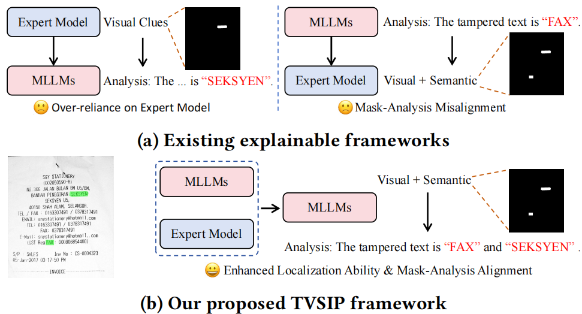
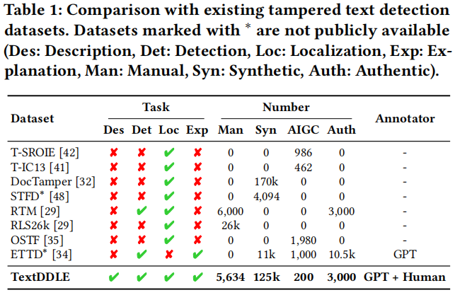
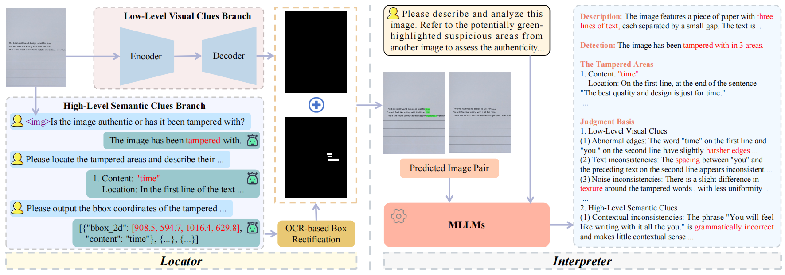

From Pixels to Semantics:A Novel MLLM-Driven Approach for Explainable Tampered Text Detection

From Pixels to Semantics: A Novel MLLM-Driven Approach for Explainable Tampered Text Detection
Guitao Xu, Ziqi Yi, Peirong Zhang, Jiahuan Cao, Shihang Wu, Lianwen
Jin
1 华南理工大学
摘要
篡改文本的传播对信息安全构成重大挑战。以往的篡改文本检测（TTD）方法主要依赖视觉特征作为线索，却忽视了文本篡改过程中可能引入的语义矛盾。为解决这一局限，我们提出 篡改文本视觉-语义解释器框架（TVSIP，Tampered text Visual-Semantic InterPreter），该框架通过多模态大语言模型（MLLMs）整合视觉与语义线索，实现全面的篡改文本分析与验证。 TVSIP 由定位器和解释器两部分组成：定位器将现有专家模型的视觉检测能力与MLLMs的语义理解能力相结合，生成精准的篡改掩码；解释器则基于识别出的篡改区域提供详尽的描述与解释。我们使用GPT-4o构建TextDDLE基准测试集进行训练与评估，大量实验表明 TVSIP 在像素级定位方面优于专家模型，在可解释性方面超越先进MLLMs。此外，该系统对图像质量下降具有强鲁棒性，并在跨领域数据集上展现出强大的泛化能力。本研究揭示了语义矛盾在 TTD 中的关键作用，为数字时代确保文档真实性的验证体系提供了更可靠的保障。
动机
与现有可解释框架的对比。我们提出的 TVSIP 框架解决了先前方法的两个关键局限：一是受限于利用MLLMs理解能力来增强定位能力，二是存在掩码分析错位问题。

TextDDLE基准
当人类专家评估文本图像是否被篡改时，通常会先对内容进行简要总结。随后通过观察视觉伪影寻找篡改痕迹，最后分析文本逻辑矛盾，确保对图像真实性进行全面评估。为使模型具备类人推理能力，我们开发了TextDDLE基准测试，助力构建更可靠的文本图像验证系统。该基准测试涵盖四大核心任务：图像描述、篡改文本检测、定位分析与解释说明。TextDDLE创新性地整合视觉与语义分析，模拟人类专家的验证流程，通过全面的图像级评估和区域特异性分析，显著提升验证可靠性。

总体框架
TVSIP 的整体框架。该框架由定位器和解释器模块组成。定位器融合视觉与语义线索生成预测结果，随后将这些预测结果输入解释器进行篡改分析。

研究的主要内容
TextDDLE基准
- 基准构建动机：为使模型能像人类专家一样对篡改文本图像进行分析，开发TextDDLE基准以支持图像描述、篡改文本检测、定位和解释四项关键任务，整合视觉与语义分析，模拟人类验证流程，提供全面的图像级和区域级评估。
- 数据来源：综合现有数据集，包括合成数据集DocTamper（170,000个篡改文档）、真实世界数据集RTM（6,000个手动篡改文档和3,000个真实图像）、RLS26k（选取其中的篡改文本图像），以及使用DiffUTE生成的200个AIGC编辑图像，用于跨域性能评估。
- 构建流程：利用GPT-4o结合精心设计的提示、篡改区域的OCR辅助信息和带注释的图像对自动生成分析结果，再经专家检查过滤或完善不可靠样本。提示设计使GPT-4o按结构化模板输出四项任务结果，OCR辅助提取并手动校正篡改区域信息，将复杂元素转为标准化抽象表示，专家检查则修正定位错误、补充语义线索并过滤难修正样本。
- 基准统计：包含5,634个手动篡改图像、125,000个合成篡改图像、200个AIGC编辑图像和3,000个真实图像，分为TextDDLE-PT（125,000个合成样本用于预训练）、TextDDLE-SFT（4,345个手动篡改和1,006个真实图像用于微调）、TextDDLE-Test（1,089个手动篡改和1,994个真实图像用于评估）、TextDDLE-Manual（200个不同来源手动篡改图像）和TextDDLE-AIGC（200个AIGC编辑图像）五个子集。
TVSIP框架
- 总体框架：由定位器（Locator）和解释器（Interpreter）组成。定位器融合小模型和MLLMs的优势提升像素级定位能力，解释器参考定位器预测生成对齐且可靠的篡改分析，解决现有框架过度依赖专家模型和掩码-分析错位问题。
- 定位器：包含低级别视觉线索分支（LLVCB）、高级别语义线索分支（HLSCB）和基于OCR的框修正模块（BR）。LLVCB采用现有TTD专家模型（如SegFormer）检测视觉伪影，输入图像x得到预测结果Mv = LLVCB(x)；HLSCB利用MLLMs通过三阶段提示（检测、定位、边界框提取）识别语义异常，经多轮交互得到可疑区域坐标B_s，公式为D1 = HLSCB(x, P1)，Dk = HLSCB(Dk-1, Pk)（k=2,3），D3即检测到的篡改区域坐标B_s；BR模块通过序列相似度检索OCR结果中的高相似文本候选，计算初始检测框中心与候选OCR框的编辑距离，取最小距离框作为修正结果B_ss，公式为C = {Ri ∈ B | Sim(Oi, Os) > τ}, Rf = arg min Ri∈C D(Ri, Rs)；融合策略采用简单加法，将修正后的边界框转换为像素级结果Ms，最终结果Mf = Mv + Conv(B_ss)，其中Conv为边界框转像素级掩码操作。
- 解释器：采用掩码辅助提示和两阶段训练策略。掩码辅助提示将定位器预测结果Mf与原始图像x融合生成高亮图像xh，结合用户提示Pinter输入MLLMs，生成四项任务输出Ranaly = MLLM(x, xh, Pinter)；两阶段训练先在TextDDLE-PT上预训练，再在TextDDLE-SFT上微调，训练时输入真实掩码，推理时使用定位器预测结果，逐步提升模型解释能力。
实验设计
- 实验设置：以Qwen2.5-VL-7B作为基础MLLM，SegFormer作为LLVCB模块，LLVCB在RTM训练集上按原协议训练，HLSCB在TextDDLE-SFT上微调。MLLMs训练使用4块NVIDIA A6000 GPU，LoRA（rank=8，alpha=16）训练3个epoch，学习率1×10−4，批大小32。评估指标包括定位的像素级指标（Precision、Recall、F1-score、IoU）、检测的图像级F1-score，以及解释器的描述、定位、解释任务的Cosine Similarity Score（CSS）和ROUGE-L，检测任务的准确率（Acc）和Image-F1（I-F1），定位和解释任务仅在正确检测的篡改图像上评估。
- 与MLLMs对比：在TextDDLE-Test数据集上与8个开源MLLMs、5个闭源MLLMs和1个e-IFD方法比较，TVSIP在描述、检测、定位、解释任务上均优于所有基线，相比基础MLLM性能显著提升，闭源MLLMs虽整体优于开源，但多数基础MLLMs检测准确率和Image-F1约50%，FakeShield仅用MLLMs解释性能平庸，凸显视觉线索重要性。
- 与专家模型对比：在RTM测试集上与12个专家模型和1个e-IFD方法比较，TVSIP在所有评估指标上表现最优，IoU、F1-score、Image-F1分别提升0.90、1.25、3.70，归因于语义线索的引入，能检测视觉上不易察觉但语义不一致的篡改线索。
- 鲁棒性与泛化性研究：鲁棒性方面，对100个篡改文本图像和100个真实图像施加JPEG压缩、图像缩放、高斯噪声、高斯模糊等退化处理，TVSIP在所有退化场景下均优于先前模型，HLSCB模块在严重退化下仍能为专家模型提供显著性能增益，如无退化时IoU和F1比SegFormer分别高2.62和3.48点，JPEG压缩（质量=75）时提升至4.16和5.94点；泛化性方面，使用200个不同来源手动篡改图像和200个AIGC编辑图像作为跨域测试集，模型在域外类型上保持最优性能，显示强泛化能力。
- 消融实验：定位器消融实验表明，仅使用LLVCB或HLSCB模块性能显著下降，两者融合因特征互补提升性能，移除BR模块也导致性能下降，验证其修正MLLMs生成边界框的有效性；在5个专家模型上添加HLSCB模块，所有模型性能均有提升，证实语义线索对篡改文本定位的重要性。解释器消融实验显示，无预训练时多数任务性能下降，验证合成数据预训练的益处；无定位器像素级预测时性能显著下降，表明当前MLLMs对篡改文本独立检测定位能力不足；输入非融合掩码而非高亮图像时性能低于TVSIP，证实方法增强了MLLMs的细粒度空间感知。
- 定性结果：视觉对比显示，在图像背景干净、视觉篡改痕迹极细微的情况下，专家模型难以检测，而TVSIP通过利用篡改过程中的语义痕迹成功定位篡改文本，并提供详细描述和合理解释，验证其在场景变化和图像退化下的鲁棒性与泛化性。
总体结论
- 关键发现：TVSIP框架通过融合低级别视觉伪影检测和高级别语义分析，在像素级篡改文本定位和提供详细篡改分析（包括图像描述、篡改文本检测、定位、解释）方面表现出色。TextDDLE基准为模型训练和评估提供了高质量数据支持。实验表明语义不一致是篡改文本检测的关键指标，语义-视觉融合显著提升了检测准确性、对图像退化的鲁棒性和跨域泛化能力。
- 领域重要性：本研究建立了可解释文档验证的新范式，强调了语义线索在篡改文本检测中的关键作用，为多模态认证系统在日益复杂的伪造技术时代开辟了有前景的研究方向，有助于提升数字时代文档真实性验证的可靠性。